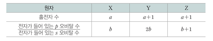
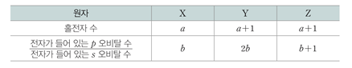

문제:
표는 2주기 바닥상태 원자 X~Z에 대한 자료이다.
이에 대한 설명으로 옳은 것만을 있는 대로 고르시오. (단, X~Z는 임의의 원소 기호이다.)
[정답 제출시 'A,B'와 같이 해당하는 답 사이에 , 사용 후 띄어쓰기 없이 작성 후 제출해주시길 바랍니다.]
- ㄱ. a=2b이다.
- ㄴ. 전자가 들어 있는 오비탈 수는 Y>Z이다.
- ㄷ. 오비탈에 들어 있는 전자 수는 Z가 X의 2배이다.
표는 2주기 바닥상태 원자 X~Z에 대한 자료이다.
이에 대한 설명으로 옳은 것만을 있는 대로 고르시오. (단, X~Z는 임의의 원소 기호이다.)
[정답 제출시 'A,B'와 같이 해당하는 답 사이에 , 사용 후 띄어쓰기 없이 작성 후 제출해주시길 바랍니다.]